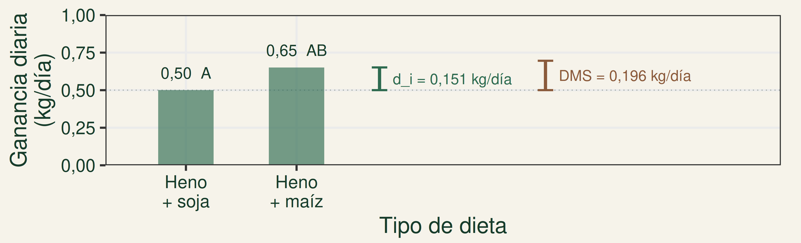
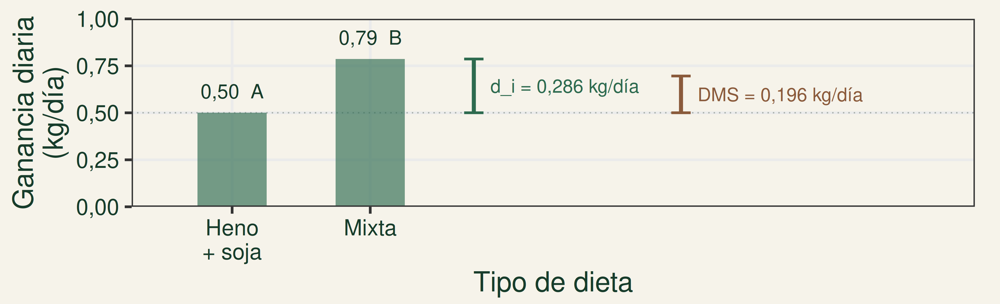
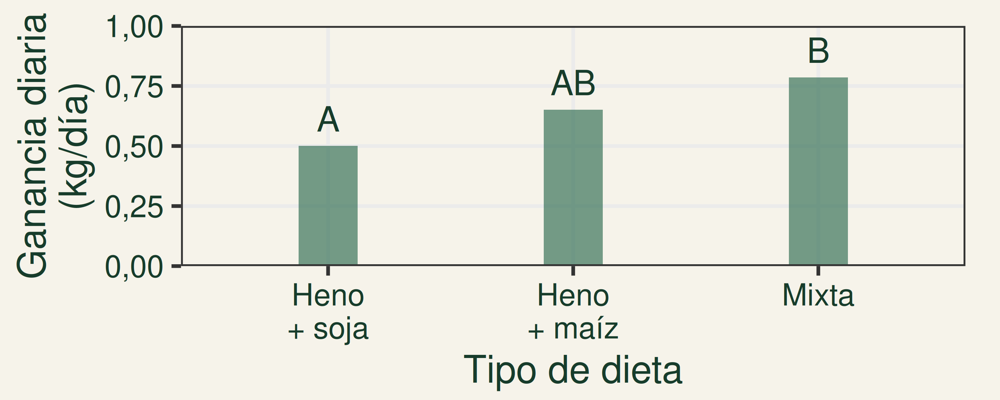
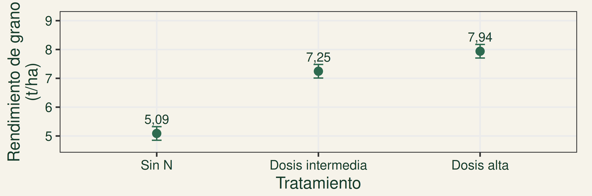
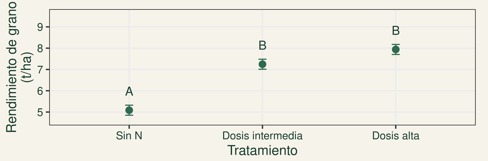

Mayor variabilidad residual (CMEE) → DMS mayor → más difícil detectar diferencias.
Mayor n de réplicas independientes → DMS menor → mayor capacidad para detectar diferencias.
Más mediciones de una misma unidad experimental no equivalen a más réplicas.
Tukey en novillitos: salida tipo InfoStat
Test:Tukey Alfa=0,05 DMS=0,19554 kg/día
Error: 0,01591 gl: 30
TIPO DE DIETA Medias n E.E.
Heno + soja 0,50 7 0,05 A
Heno + maíz 0,65 7 0,05 AB
Heno + sorgo 0,69 7 0,05 AB
Silaje + soja 0,79 7 0,05 B
Mixta 0,79 7 0,05 B
Medias con una letra común no son significativamente diferentes (p > 0,05)
Experimento simulado: 35 novillitos asignados al azar; 7 por dieta.
Animal = UE independiente, con alimentación individual. Ganancia en kg/día.
Error = CMEE · gl del error · n: réplicas · E.E. de la media.
Medias muestrales, inferencia poblacional
Test:Tukey Alfa=0,05 DMS=0,19554 kg/día
Error: 0,01591 gl: 30
TIPO DE DIETA Medias n E.E.
Heno + soja 0,50 7 0,05 A
Heno + maíz 0,65 7 0,05 AB
Heno + sorgo 0,69 7 0,05 AB
Silaje + soja 0,79 7 0,05 B
Mixta 0,79 7 0,05 B
Medias con una letra común no son significativamente diferentes (p > 0,05)
MEDIAS → medias muestrales observadas.
LETRAS → pruebas sobre medias poblacionales.
¿Qué significa compartir una letra?
“Medias con una letra común no son significativamente diferentes (p > 0,05)”.
No hay evidencia suficiente para afirmar que las medias poblacionales difieren.
Eso no demuestra igualdad entre las medias poblacionales.
Heno con soja o maíz: ¿diferencia significativa?

Ganancia diaria de peso (kg/día) · barras desde cero · segmentos en la misma escala.
No: comparten A. No se detectaron diferencias significativas entre sus medias poblacionales.
dᵢ = 0,151 kg/día < DMS = 0,196 kg/día.
Heno + soja y Mixta: ¿diferencia significativa?

Ganancia diaria de peso (kg/día) · barras desde cero · segmentos en la misma escala.
Sí: no comparten letras. Hay evidencia de que sus medias poblacionales difieren.
dᵢ = 0,286 kg/día > DMS = 0,196 kg/día.
Compartir letras no genera grupos separados

Heno + maíz comparte A con Heno + soja y B con Mixta. Heno + soja y Mixta no comparten letras.
AB no constituye un tercer grupo. Las letras no son un ranking.
¿Cómo lo escribiríamos?
Heno + soja y Heno + maíz comparten la letra A.
INCORRECTO: “Las medias son iguales”.
CORRECTO: “No se detectaron diferencias significativas entre las medias poblacionales de Heno + soja y Heno + maíz (Tukey, α = 0,05)”.
La superposición de barras no determina la significación.
Fertilización nitrogenada en maíz
¿La dosis de nitrógeno afecta el rendimiento medio del maíz?
Sin N
Dosis intermedia
Dosis alta
Datos simulados con fines didácticos DCA: 21 parcelas asignadas aleatoriamente, 7 por tratamiento. Unidad experimental: parcela independiente. Rendimiento de grano (t/ha).
¿Qué observamos en la muestra?

Datos simulados · medias muestrales ± 1 E.E. · n = 7 por tratamiento.
¿Hay evidencia de diferencias entre las medias poblacionales?
Rechazamos Ho: por lo menos una media poblacional difiere.
¿Dónde están localizadas las diferencias?
Tukey en maíz
Datos simulados · salida con formato de InfoStat · rendimiento en t/ha
Test:Tukey Alfa=0,05 DMS=0,85076 t/ha
Error: 0,3889 gl: 18
TRATAMIENTO Medias n E.E.
Sin N 5,09 7 0,24 A
Dosis intermedia 7,25 7 0,24 B
Dosis alta 7,94 7 0,24 B
Medias con una letra común no son significativamente diferentes (p > 0,05)
¿Qué pares presentan diferencias significativas?
Las medias muestrales deben diferir en más de 0,85076 t/ha para que, mediante Tukey, tengamos evidencia de una diferencia entre las medias poblacionales, en este análisis.
Comunicar el resultado de maíz

DATOS SIMULADOS · medias ± 1 E.E. · n = 7 · Tukey, α = 0,05.
Sin N vs. cada dosis de N: diferencias significativas.
Dosis intermedia vs. dosis alta: no se detectó diferencia significativa.
7,25 ≠ 7,94 en la muestra; ambas medias reciben B.
¿Siempre Tukey?
Prueba
¿Qué comparaciones?
Tukey
Todos los pares de medias.
Dunnett
Cada tratamiento contra un testigo/control.
Duncan
De a pares; suele detectar más diferencias que Tukey.
Elegimos según qué queremos comparar y cómo deseamos controlar el error.
La mayor sensibilidad de Duncan implica menor protección frente al error de tipo I.
Localizar diferencias, sin perder la inferencia
ANOVA significativo Por lo menos una media poblacional difiere.